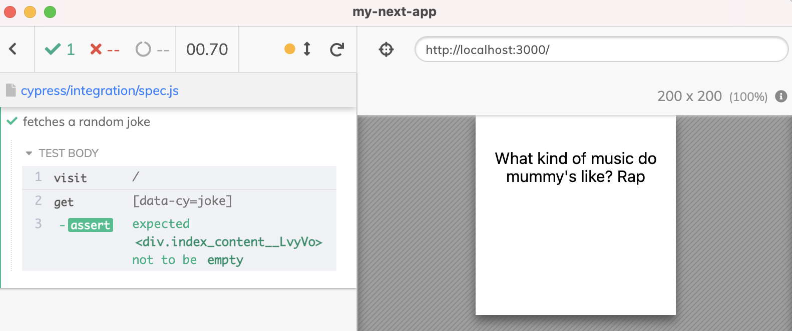
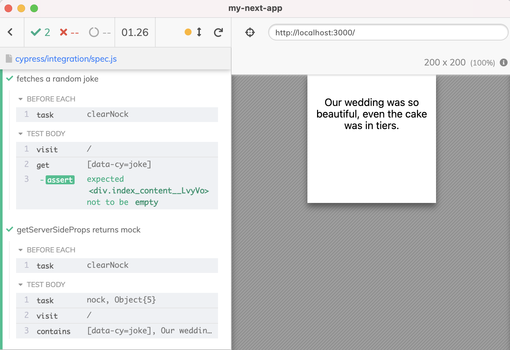
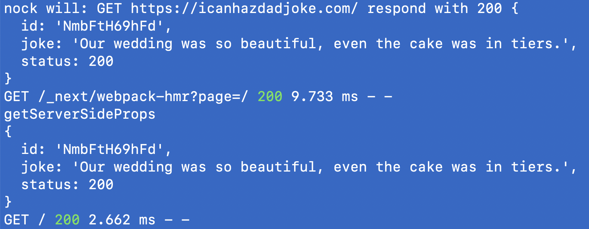
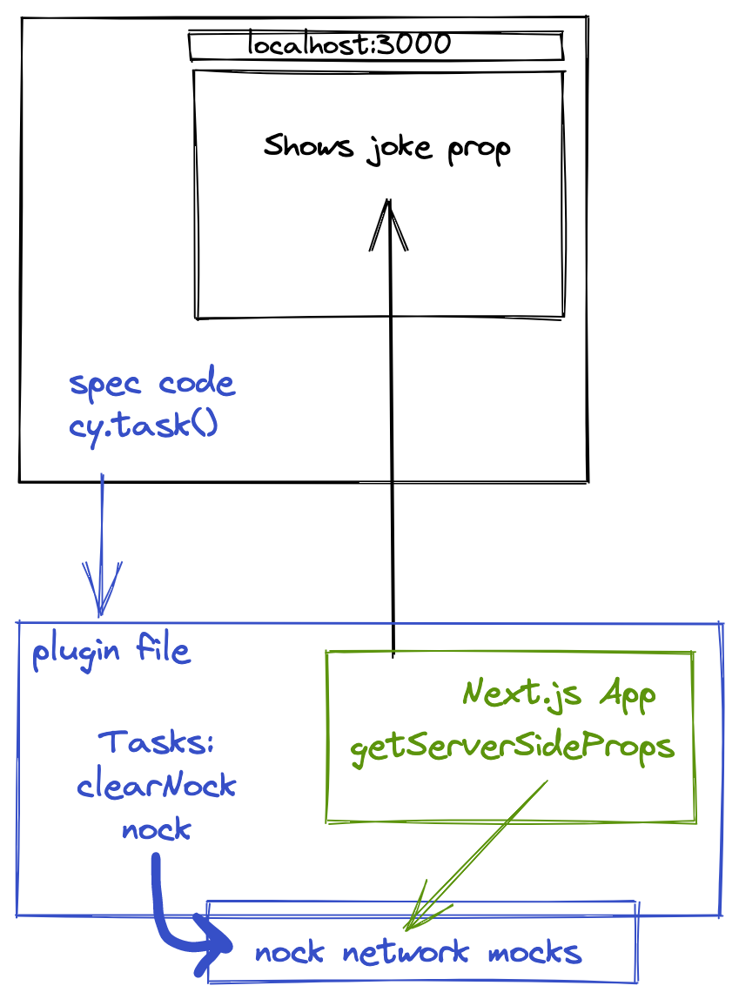

Cypress has a great way to spy or stub network calls the application makes. Just use the cy.intercept command and have the full control over Ajax calls and static resources. But sometimes, the application is making the network calls from the server-side call. For example, a Next.js application might use the getServerSideProps method to retrieve a joke to be shown to the user.
1 | import styles from './index.module.css' |
Without any network mocking, the Cypress test can only assert that there is some text on the page.
1 | /// <reference types="cypress" /> |

It would be very nice to stub the fetch call used by the getServerSideProps method. Unfortunately, this call is not made from the web application running in the browser; it is made from the server process.
🎁 You can find the source code from this blog post in the repo bahmutov/nock-getServerSideProps. You can also watch the explanation in this video Stub Network Calls Made by Next.js App in getServerSideProps Method.
What if we had access to the server process so we could install network stubs whenever we needed? We could use nock library to control the network - the same network used by the Next.js server-side process.
Here is what we can do - we could run the Next.js server right inside the Cypress plugins process. This process runs in the background, and the test running in the browser can communicate with the process through the cy.task command. We can start the Next.js application through the custom http server approach.
1 | const http = require('http') |
🤔 Wait, doesn't Cypress documentation advise not to start the server from the plugin process? Yes it does, but the documentation cannot stop us. We are like a professional driver on the closed track - we can do whatever we want.
We start the server inside the Cypress process instead of an external process. This only works locally, of course. Let's add network mocking using nock. We need a way to reset the network mocks (we still want the first test to happen without stubbing), and we need a way to set a specific network mock. We can create tasks for these.
1 | const nock = require('nock') |
Let's write the spec.
1 | /// <reference types="cypress" /> |
The browser shows our joke! The network stub has worked.

We can check the terminal output to confirm the getServerSideProps got the joke we have set up.

Our Cypress test and the Next.js app running inside the plugins process are shown in the diagram below.

See also
- if you can run your Next.js server inside the browser using StackBlitz, then you can stub the network calls from the server using
cy.interceptcommand as the video below shows.
- I have described using
nockto stub network calls in other blog posts, like Mock system APIs and Simple Ajax testing. - we could test the home page component using a component testing approach, read the post Components People Test
- we could also let the server fetch the real joke without mocking the network, but overwrite it in the page received by the browser, see Control Next.js Server-Side Data During Cypress Tests.